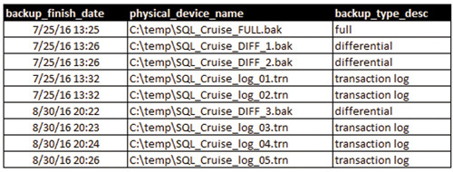

7.Восстановление базы данных: основные алгоритмы и этапы
Восстановление базы данных основные алгоритмы.
Восстановить базу данных можно с помощью стандартного инструмента в панели управления, а также, при наличии у вас ранее созданной копии (дампа) - через phpMyAdmin или SSH.
Через ПУ
Для восстановления базы данных рекомендуем использовать следующий алгоритм:
1. Создайте бэкап базы данных в ее текущем состоянии. После вы сможете его удалить, убедившись, что он больше не требуется.
2. Удалите базу данных в разделе "Базы данных MySQL".
3. Создайте точно такую же базу данных, с таким же именем и паролем.
4. Перейдите в раздел "Резервные копии" панели управления аккаунтом.
5. Выберите вкладку "Базы данных".
6. Выберите из списка доступную дату с сохраненной резервной копией.
7. Напротив "Восстановить" напротив нужной базы.
8. Подтвердите восстановление, нажав на кнопку "ОК".
Через phpMyAdmin
1. Откройте раздел "Базы данных MySQL" панели управления аккаунтом.
2. Перейдите по ссылке "phpMyAdmin" рядом с именем базы данных, в которую следует загрузить дамп. При переходе понадобится ввести пароль базы данных.
3. В открывшейся панели перейдите в раздел "Импорт", расположенный в верхнем меню.
4. Нажмите на кнопку "Выберите файл" и укажите расположение созданного дампа.
5. После нажатия кнопки "Вперед" таблицы будут загружены в базу данных.
Восстановление отдельных таблиц БД через phpMyAdmin
1. Откройте раздел "Базы данных MySQL" панели управления аккаунтом.
2. Перейдите по ссылке "phpMyAdmin" рядом с именем нужной базы данных.
3. В открывшейся панели отметьте таблицы, которые необходимо восстановить.
4. Перейдите в самый низ страницы и нажмите на выпадающее меню "С отмеченными".
5. Выберите вариант "Восстановить таблицу".
При подключении по SSH
Подключитесь к серверу хостинга по SSH и используйте одну из команд ниже.
Между ключами (-u и -p) и следующими за ними параметрами 'база_данных' и 'пароль_базы_данных' не должно быть символа пробела.
Для восстановления базы данных из дампа (при условии, что дамп не был сжат и имеет расширение .sql) в SSH-клиенте необходимо выполнить команду:
mysql -u'база_данных' база_данных -p'пароль_базы_данных' < имя_дампа.sql
Или:
cat имя_дампа.sql | mysql -u'база_данных' база_данных -p'пароль_базы_данных'
Для дампа с расширением .sql.zip необходимо выполнить команду:
unzip -p имя_дампа.sql.zip | mysql -u'база_данных' база_данных -p'пароль_базы_данных'
Для дампа с расширением .sql.gz:
zcat имя_дампа.sql.gz | mysql -u'база_данных' база_данных -p'пароль_базы_данных'
Для дампа с расширением .sql.bz2:
bzcat имя_дампа.sql.bz2 | mysql -u'база_данных' база_данных -p'пароль_базы_данных'
Базовые принципы восстановления для администратора
Типы восстановления, концепция состояния базы данных и резервные копии журнала регистрации транзакций
Самым важным аспектом профессии администратора баз данных вполне заслуженно считается его способность восстанавливать потерянные или поврежденные данные в процессе резервного копирования. Я твердо убежден, что успешное резервное копирование нерелевантно: критерием успеха администратора баз данных может служить только полное восстановление без потери данных (в крайнем случае — с допустимыми потерями).
Типы восстановления
Система Microsoft SQL Server предусматривает использование нескольких видов резервных копий. Подобным же образом в этой системе может применяться несколько типов восстановления базы данных, которая вышла из строя, или части базы данных.
В Microsoft SQL Server используются следующие базовые типы восстановления:
- восстановление базы данных;
- восстановление журналов регистрации транзакций;
- восстановление файлов и групп файлов;
- восстановление страниц.
Мы рассмотрим первые два типа восстановления, поскольку именно с ними администраторам баз данных приходится работать в первую очередь. Восстановление страниц, а также файлов или групп файлов — это сложные процессы, и мы не будем останавливаться на них в этой статье, так как она адресована прежде всего новоиспеченным администраторам баз данных.
В дальнейшем изложении материала я буду исходить из того, что читатель либо имеет рабочее представление о резервном копировании баз данных SQL Server, либо по меньшей мере прочел первую статью серии.
Восстановление базы данных
Чтобы восстановить базу данных, требуется по крайней мере один резервный файл, и это должен быть файл с полной резервной копией. При использовании одного резервного файла, если процесс пройдет нормально, вы получите базу данных, приведенную к состоянию на момент формирования этой резервной копии. Это будет копия базы данных в указанный момент за вычетом неподтвержденных транзакций. Восстановление баз данных — общепринятый метод перемещения копий баз данных с сервера на сервер для выполнения таких операций, как тестирование и диагностика; при этом размеры базы данных не должны превышать разумные пределы («разумные пределы» предполагают практическую возможность работы с базой данных с учетом ограничений по времени и объему дискового пространства, необходимого для ее перемещения).
Однако возможности администратора ни в коем случае не ограничиваются сценарием, когда он располагает всего лишь одним резервным файлом и может вернуть базу данных только в то состояние, в каком она находилась в момент получения последней резервной копии. Вы можете объединить несколько резервных копий (различных типов), чтобы успешно привести базу данных в состояние на момент, непосредственно предшествующий сбою или повреждению, если у вас возникнет такое желание. Нужно только выбрать правильную стратегию резервного копирования и восстановления. Если ваша база данных находится в режиме протоколирования, вы можете сформировать цепочку резервных копий для выполнения этой задачи: привести базу данных в состояние, предшествующее точке сбоя. В данном случае это делается так: сначала нужно применить основную резервную копию вашей базы данных, затем, возможно, разностную резервную копию и, наконец, одну или несколько резервных копий журналов регистрации транзакций до интересующего вас момента. Этот момент может совпадать с концом последней применяемой копии журнала регистрации транзакций или приходиться на середину этой последней копии журнала.
Базовая резервная копия подготовит вашу платформу к процессу восстановления. Здесь вы можете остановиться, если для удовлетворения ваших потребностей в деле восстановления вам не нужно будет использовать последующие резервные копии. Если же вам нужно двигаться в сторону восстановления на определенный момент, то в вашем распоряжении набор разностных резервных копий и копий журнала регистрации транзакций. Как отмечалось в предыдущей статье, в разностные копии включаются все страницы базы данных, измененные с момента получения последней полной резервной копии. Это означает, что если полные резервные копии формируются у вас по понедельникам в полдень, а разностные резервные копии — в 11 часов утра ежедневно, то размеры каждой последующей разностной копии будут увеличиваться до полудня следующего понедельника, когда будет создана очередная полная резервная копия. Я исхожу из того, что работа с базой данных осуществляется на регулярной основе и что в ходе этой работы либо модифицируются данные с помощью операторов INSERT, UPDATE или DELETE, либо изменяется структура объектов, входящих в базу данных. При таком графике, если у вас происходит сбой в среду в 13:00, вы первым делом восстановите полную резервную копию, полученную в понедельник, а затем разностную резервную копию от среды. Далее вы примените резервные копии журнала регистрации транзакций с этого момента, с тем чтобы привести базу данных к состоянию на момент, предшествующий 13:00. Надеюсь, вы резервируете журналы регистрации транзакций, если для вас важно иметь возможность восстановления по этой схеме?
Теперь рассмотрим такую ситуацию. Сбой у вас произошел в среду в 9 часов утра. Теперь вам предстоит выполнить несколько больший объем работ, так как вы не сможете использовать полученную в среду разностную копию в качестве отправной точки для повторения транзакций из копий журнала регистрации транзакций, ведь ваша разностная копия была создана уже по прошествии точки сбоя, к которой вы хотите привести базу данных. Вам придется использовать полную резервную копию за понедельник, а затем разностную копию за вторник. После этого вам потребуется применить столько резервных копий журнала транзакций, сколько нужно для того, чтобы «добраться» до 9 утра в среду от точки формирования разностной копии, полученной во вторник.
Я описал эти процессы, поскольку вам необходимо иметь представление о двух основных положениях, касающихся разностных резервных копий: во-первых, вы не должны применять несколько разностных резервных копий, и, во-вторых, разностные копии «не понимают», когда именно была совершена транзакция, модифицировавшая данные или структуру базы данных. Пытаясь привести базу данных к состоянию на определенный момент времени, вы не сможете остановиться на полпути в процессе восстановления из разностной резервной копии.
Восстановление, без восстановления, ожидание
При выполнении операций восстановления важно понимать, что означает концепция состояния базы данных. В какое состояние вы хотите привести базу данных, перед тем как покинете ее, выполняя восстановление отдельно взятой резервной копии, будь то копия базы данных, журнала регистрации транзакций или разностная копия? Мы рассмотрим три состояния.
1. Восстановление
Когда база данных находится в восстановленном состоянии, это означает, что она готова к работе и у вас нет возможности восстанавливать дополнительные копии с целью сдвинуть состояние базы далее по оси времени. Чтобы выполнить цепочку операций по восстановлению, вы не можете нарушить зафиксированную в журнале последовательность транзакций, которые изменяли эту базу. Данную журнальную последовательность можно представить как историю базы данных. При регистрации каждой транзакции присваивается специальный номер, log sequence number (LSN). В режиме восстановления с протоколированием при восстановлении полных, разностных резервных копий, а также резервных копий журнала регистрации транзакций эти резервные копии должны быть упорядочены и применены таким образом, чтобы порядок номеров LSN не нарушался. Если бы вы позволили базе данных перейти в состояние восстановления и пользователи начали бы выполнять новые транзакции с использованием объектов этой базы данных, вы не смогли бы в дальнейшем применять резервные копии, поскольку в такой ситуации цепочка была бы разорвана новыми транзакциями, получающими новые номера LSN. Чтобы перевести базу данных в восстановленное состояние в конце процесса восстановления, нужно использовать ключевое слово RECOVERY в предложении WITH команды на восстановление. Синтаксис мы рассмотрим в конце статьи.
2. Без восстановления
Если база данных приведена в состояние восстановления, это отображается в обозревателе объектов среды SQL Server Management Studio. Это означает, что база данных находится в состоянии, в котором по крайней мере один резервный файл был восстановлен и база данных готова принять следующую резервную копию в цепочке, будь то разностная резервная копия или резервная копия журнала регистрации транзакций. Кроме того, это может означать, что пользователь, восстанавливавший последнюю резервную копию, не привел базу данных в состояние восстановления с помощью упомянутого выше ключевого слова RECOVERY. База данных в состоянии восстановления может принимать последующие резервные файлы в процессе восстановления, но не может санкционировать какие-либо действия над собой со стороны конечных пользователей, включая даже операции считывания, которые никоим образом не изменяют данные. Если база данных пребывала в восстановленном состоянии, ее нельзя привести в состояние восстановления, в котором она будет принимать новые действия в процессе восстановления, по причинам, изложенным выше. Если вы хотите, чтобы база данных в процессе восстановления могла принимать дополнительные разностные резервные копии или резервные копии журналов регистрации транзакций, проследите за тем, чтобы в предложение WITH команды восстановления было включено ключевое слово NO_RECOVERY.
3. Ожидание
База данных в режиме ожидания пребывает в состоянии неопределенности: она допускает выполнение пользователями операций чтения, а если ее чуть-чуть «подтолкнуть» к этому, может предпринимать дополнительные действия по восстановлению. Чтобы гарантировать такую возможность, а также обеспечить стабильное и единообразное состояние данных для работы с запросами, база данных должна отменить все незавершенные транзакции. Если бы она отменила эти транзакции, вы не смогли бы восстанавливать последующие резервные копии, поскольку цепочка номеров LSN была бы разорвана. Так вот, в этих условиях SQL Server сохраняет упомянутые незавершенные транзакции в файле UNDO. Прежде чем приступать к восстановлению последующих журналов регистрации транзакций, SQL Server придется привести базу данных в состояние восстановления, применить хранимые в файле UNDO транзакции и затем, наконец, восстановить следующий журнал регистрации транзакций в цепочке резервирования. Чтобы привести базу данных в состояние ожидания, необходимо ввести в предложение WITH инструкции восстановления ключевое слово STANDBY, а также указать путь к файлу UNDO.
Резервные копии журнала регистрации транзакций
К этому моменту я уже наметил основные контуры концепции резервных копий журналов регистрации транзакций. Вы можете использовать эти резервные файлы для повторения транзакций восстанавливаемой базы данных до любого момента времени внутри периода, охватываемого данной резервной копией журнала регистрации транзакций. Все незавершенные транзакции в конце резервной копии остаются незавершенными; предполагается, что вы сможете применить к восстанавливаемой базе данных дополнительные резервные копии. Если вы захотите привести базу данных в состояние восстановления, RECOVERY, она отменит эти незавершенные транзакции. Если же вы выберете вариант без восстановления, NO_RECOVERY, она оставит их в неизменном и незавершенном состоянии. Выберите вариант STANDBY, и будет выполнена отмена этих незавершенных транзакций, после чего они будут сохранены в файле UNDO. В резервных копиях журналов регистрации транзакций хранится вся информация, необходимая для применения транзакций в порядке времени выполнения и без конфликтов, как если бы вы воспроизводили запись проведенных внутри базы данных операций. В сущности, именно это вы и делаете, когда применяете резервную копию журнала регистрации транзакций.
История резервирования тестовой базы данных
В этом разделе, а также в следующем, с помощью языка Transact-SQL используются резервные копии моей базы данных SQL_Cruise, пребывающей в режиме полного протоколирования, в том смысле, что все транзакции регистрируются и что я при желании могу воспроизвести состояние на тот или иной момент времени, если у меня имеются файлы резервных копий, полученные на указанный момент (см. экран 1).

Экран 1. История резервирования тестовой базы данных
Кроме того, мы узнаем, что кто-то удалил некую весьма важную таблицу в 20:26 30 августа 2016 года с помощью следующей команды:
DROP TABLE Very_Important_Table;